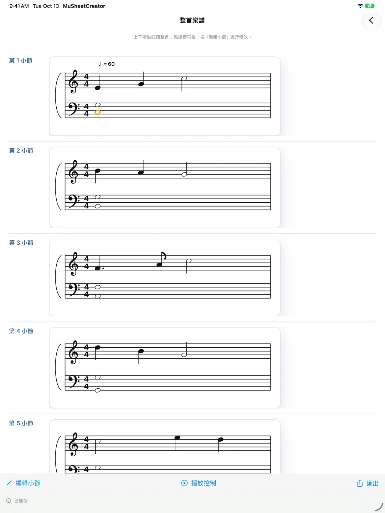
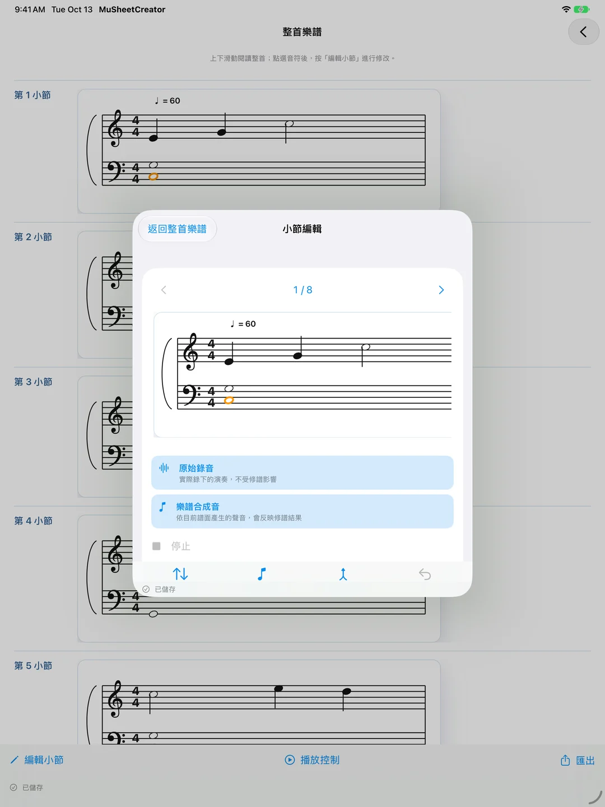
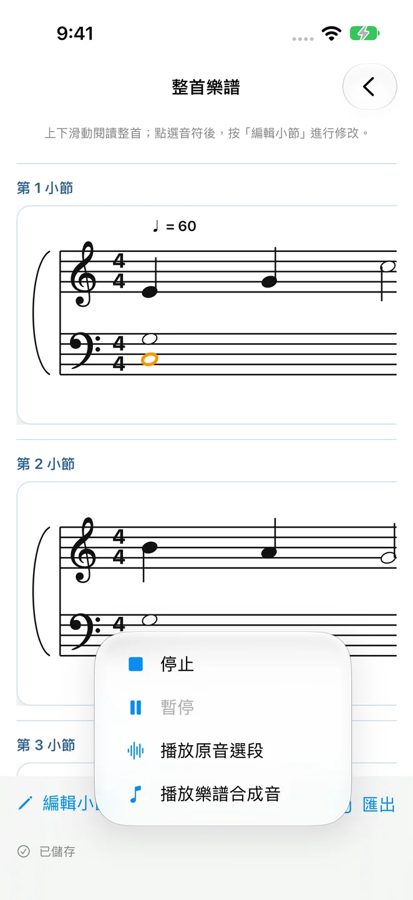
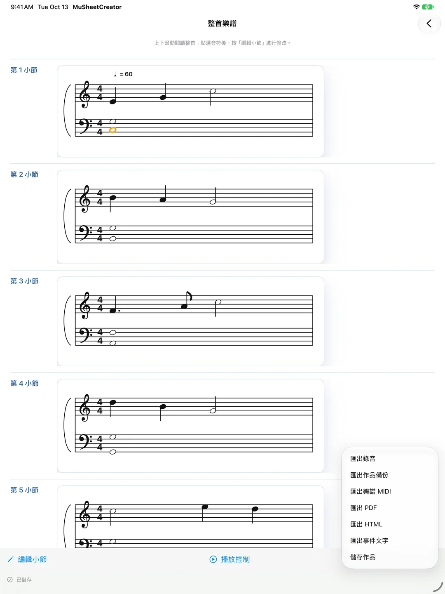
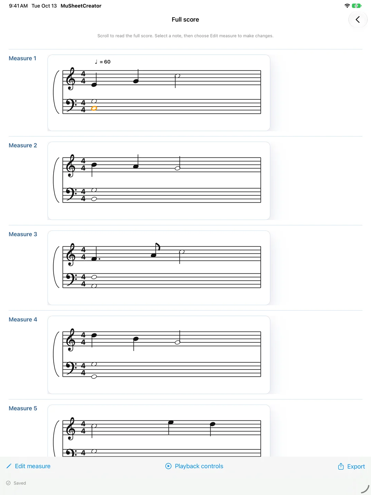
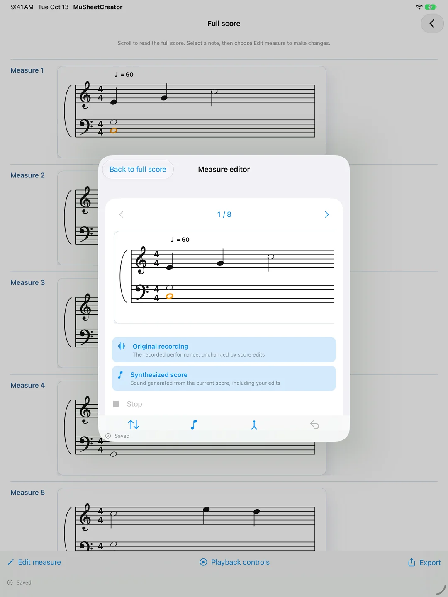
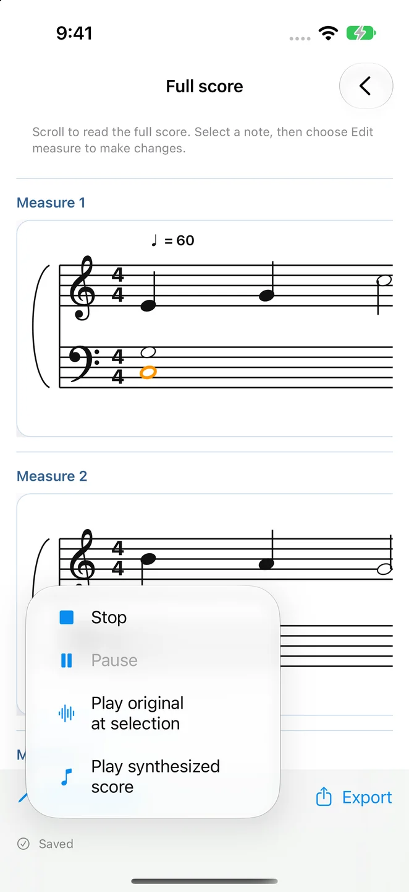
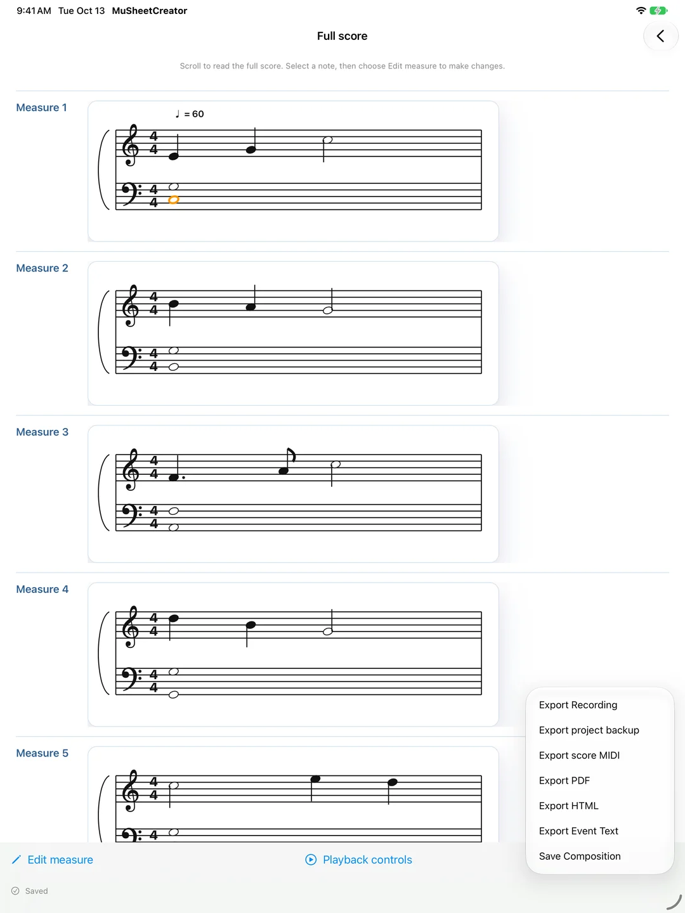

MuSheetCreator
彈出一段想留下的旋律，先錄下來，再慢慢整理成自己的樂譜。
MuSheetCreator 把演奏或 MIDI 輸入整理成可編輯的五線譜草稿。從整首閱譜走進單小節編輯，對照保留的原始錄音修改音符與節奏，再把作品匯出為 PDF 或 MIDI，繼續創作。
1.1.0：讓草稿更容易讀、聽與修改
- 整首連續閱譜：上下滑動閱讀完整樂譜，需要修改時再打開單一小節，完成後回到原本的位置。
- 鋼琴音長記譜改善：減少辨識後不必要的重複起音與零碎短音，讓後續整理更順手。
- 播放來源更清楚：分開標示「原音回放」與「樂譜合成音」，比較實際演奏與目前譜面。
- 錄音與輸出更完整：鋼琴辨識、多音／和弦模式最長可錄 5 分鐘；PDF 分行與分頁改善，必要時使用橫式版面。








從演奏開始，而不是從空白樂譜開始
錄音前先設定拍號、速度與調號，再依演奏內容選擇單音旋律、鋼琴辨識或多音／和弦模式。鋼琴辨識僅適用於鋼琴；鋼琴辨識與多音／和弦模式會在開始前提示 5 分鐘上限，到達上限時自動停止錄音。
MIDI 與麥克風雙輸入
用裝置麥克風記下演奏，或透過相容電鋼琴的 MIDI 輸入直接記錄按鍵事件。電鋼琴若支援 MIDI，建議優先使用 MIDI 輸入；純 MIDI 錄製若沒有同時錄下麥克風聲音，就不會有原音可回放。
邊聽邊校對，保留創作的選擇
分別聽原始錄音與樂譜合成音，從指定小節或音符開始播放，再調整音高、時值、休止符與和弦音。聲音辨識產生的是創作草稿，不保證完整還原演奏；錄音環境、演奏方式與踏板延音都可能影響結果，需要時可對照原音修正。
可編輯的五線譜草稿
- 從錄音建立五線譜草稿
- 保留並回放原始錄音
- 支援 MIDI 輸入與麥克風聲音辨識
- 支援高音譜與低音譜的大譜表顯示
- 可編輯音符音高、時值、和弦音與休止符
- 可加入歌詞、指法、圓滑線、跳音、漸強、漸弱等常用記號
- 可從指定小節或音符位置開始播放
- 可匯出 PDF、HTML 樂譜預覽、MIDI 與事件文字
- 可儲存作品、匯出作品備份，並另行匯出保留的原始錄音
本機處理與隱私
MuSheetCreator 以本機處理為核心。錄音與樂譜資料會保存在使用者的裝置上，供使用者播放、編輯與匯出。App 不會將錄音上傳到伺服器，也不使用追蹤或廣告用途的第三方服務。
MuSheetCreator
Play a melody worth keeping. Record it now, and shape the score in your own time.
MuSheetCreator turns a performance or MIDI input into an editable notation draft. Read the full score, open a measure to refine it, compare with the retained original recording, and export PDF or MIDI to keep developing your composition.
1.1.0: easier to read, listen, and refine
- Continuous score reading: scroll through the full composition, open a measure to edit, then return to your reading position.
- Improved piano note durations: fewer unnecessary repeated attacks and fragmented short notes after transcription.
- Clearer playback choices: original audio and synthesized score playback are labelled separately, so you can compare the performance with the current notation.
- Recording and export improvements: piano and polyphonic/chord modes support up to 5 minutes; PDF line and page breaks are improved, with landscape layout when needed.
- Devices
- iPhone / iPad
- Download
- Paid download
Piano and polyphonic/chord modes support recordings up to 5 minutes. Transcription produces an editable draft.








Start from Playing, Not from a Blank Score
Set the time signature, tempo, and key, then choose single-melody, piano transcription, or polyphonic/chord mode for your performance. Piano transcription is for piano only. Piano and polyphonic/chord modes show a 5-minute limit before recording and stop automatically at the limit.
MIDI and Microphone Input
Record a performance through the device microphone, or capture MIDI events directly from a compatible digital piano. MIDI input is recommended when your piano supports it. MIDI-only capture without a simultaneous microphone recording has no original audio to play back.
Listen, compare, and make it your own
Play the original recording and synthesized score separately. Start from a selected measure or note, then adjust pitches, durations, rests, and chord tones. Audio transcription produces a creative draft rather than a guaranteed exact reproduction. Recording conditions, playing style, and sustain pedal use can affect the result, so compare with the original audio and edit as needed.
Editable Staff Notation Drafts
- Create staff notation drafts from recordings
- Preserve and replay the original audio
- Support MIDI input and microphone sound recognition
- Display grand staff notation with treble and bass clefs
- Edit note pitch, duration, chord tones, and rests
- Add lyrics, fingerings, slurs, staccato, crescendo, diminuendo, and common notation marks
- Start playback from a selected measure or note
- Export PDF, HTML score previews, MIDI, and event text
- Save compositions, export project backups, and export retained original recordings separately
Local Processing and Privacy
MuSheetCreator is designed around local processing. Recordings and score data are stored on the user's device for playback, editing, and export. The app does not upload recordings to developer-operated servers and does not use third-party services for tracking or advertising.